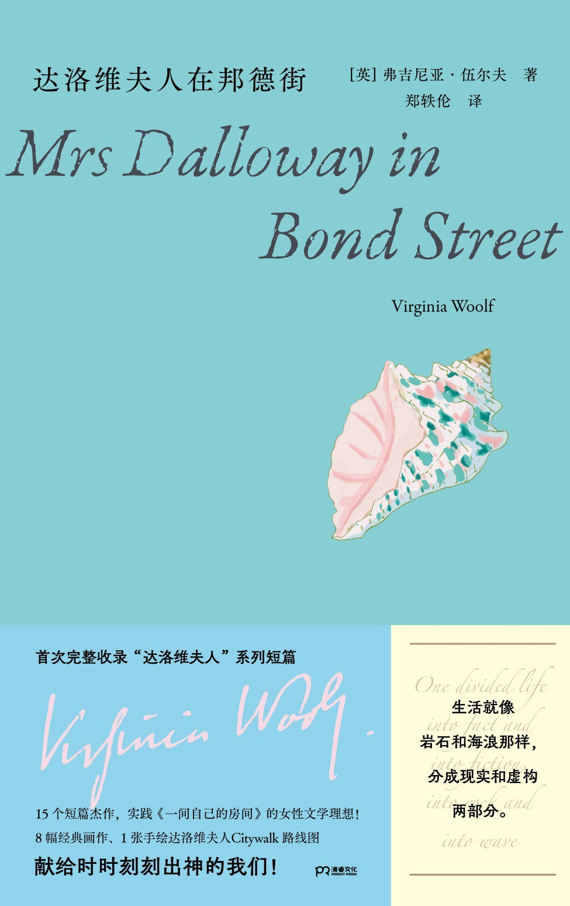

📚 本月新书
4 本 · 10月出版
1. 二十世纪西方文学理论：新译本
本书以清晰晓畅的语言，系统梳理了二十世纪以来西方文学理论的发展脉络，对俄国形式主义、现象学、诠释学、接受理论、结构主义、符号学、后结构主义、精神分析、女性主义等重要理论流派做出了深入而富有洞见的阐释，并始终将文学理论置于社会历史与思想文化的广阔背景中加以考察。 本书既是一部西方文学理论导论，也是一部关于现代人文思想的导读。它不仅帮助读者掌握文学理论的基本概念和方法，更引导人们思考文学是什么、阅读意味着什么，以及文学与历史、政治、意识形态和人的生活之间的复杂关系。
本日新
封面加载失败
')">2. 学徒生涯
克拉丽丝·李斯佩克朵非常擅长书写女性的感受，却极少像她在《学徒生涯》里这样，如此直接地正面处理感受最盛大的形式之一——爱情。 这本书还是标志性的李斯佩克朵风格，丰沛的感受力从每一个亲密或孤独的瞬间萌发，让细微的身体经验成长为词汇与情感的浓荫。故事仿佛全无理性，却又有着无比精密的语言，用充满了呼吸感的起伏邀请读者一同共情，见证爱的主体如何在欲望与恐惧的辩证中逐渐成形。 毕竟，对于李斯佩克朵而言，哪怕是爱情，也不过是人生终极存在的一个注脚。爱的危险，恰在于它点亮了通往生命本源的路径。

封面加载失败3. 达洛维夫人在邦德街
达洛维夫人说要自己去买手套。她走上街的时候大本钟开始敲响了。 ——弗吉尼亚·伍尔夫（《达洛维夫人在邦德街》） 弗吉尼亚·伍尔夫写作的核心，是一种融入世界并与之疏离的运动，这就是达洛维夫人的运动。 ——安妮·埃尔诺 《达洛维夫人》描绘了克拉丽莎·达洛维生活中的一天。她正精心安排着一场盛大的聚会最后的细节。在这部作品之前，伍尔夫还以达洛维夫人举办的聚会为主题，创作了一系列短篇小说，如《达洛维夫人在邦德街》《爱同类的人》《引见》等，深入刻画了这位迷人的女主人公及其宾客最细微的内心活动。 本书首次完整收录8篇“达洛维夫人”系列短篇故事，特别增补一篇遗稿《简单的旋律》。另有《墙上的印记》《存在性的时刻——斯莱特家的别针都没有尖头》等7篇伍尔夫短篇名作全新译文，经典再现。 —————————— △15个短篇杰作，实践《一间自己的房间》的女性文学理想： “更短、更...